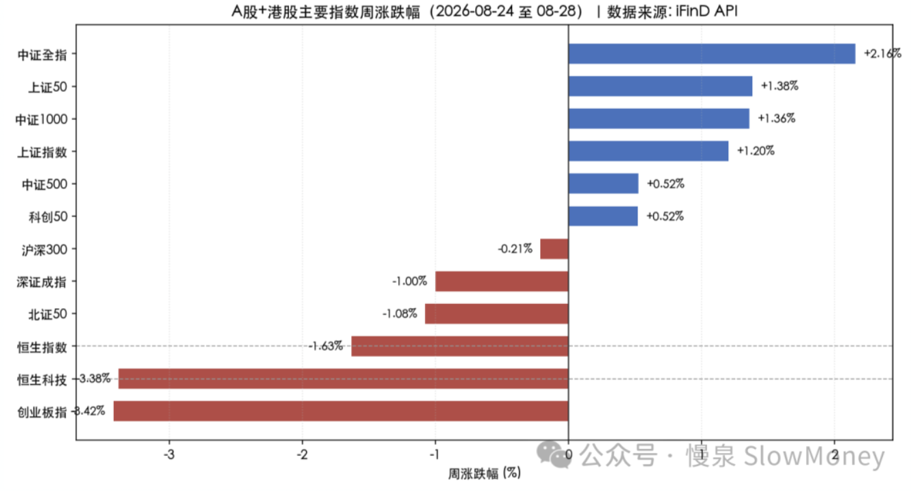

投资备忘20260830-围剿
2026-08-24 — 2026-08-30 · W35 · 周度备忘（补档）
最近读《伪满洲国》，读到其中关于杨靖宇的一段。以前的记忆只有他肚子里面的树根和树皮，小说记录了这样的一段：杨靖宇为了摆脱日伪的追杀和悬赏，不停在山中、河边逃亡，但是实在太饿，同时相信老百姓的良知，靠近一个小山村，碰到 4 个村民。村民认出了杨靖宇，杨靖宇给村民足以覆盖日本赏金的金钱，请求他们搞些干粮和棉鞋。四人下山拿东西，杨靖宇等待。四人下山路上相互没说话——没人说去告发，也没人说要送干粮棉鞋上山，四人分手时彼此望了望，每个人眼里都是犹豫。其中一个人想：如果他不说，而其他人告发了，自己会家破人亡——越想越怕，直奔警察局。
后面的故事就是记忆中的故事了。当一个明显的目标开始被关注的时候，就会出现各种人类行为大赏，就像抱团明星股被围剿时各类人的反应。
围剿
类似一种必死局，当然也有可能反围剿、去新根据地，不在这个讨论范围。当环境已经出现类似围剿的场景时：在外面的资金可能做空、看热闹、观望；在里面的资金有的犹豫、有的先割、有的反手；看好的资金选择等待；看衰的资金加码做空。过程上可能呈现类似消费抱团被围剿的状态。
- 暴跌并暴力反弹。情绪高位后必然伴随的修正，就像"村民"——你不跑别人先跑你就得"买单"。2021 年暴跌 30-40% 之后，明显的反弹，一般复读跌幅的 60-70% 幅度，不会超过前高；
- 漫长的估值消化阶段。有业绩的可以通过业绩补贴跌幅，类似旗型走势；没业绩的 A 型走势；
- 围剿的胜利者。"村民"形成新共识的方向，在明星股暴跌阶段表现强势；明星反弹阶段表现坚挺或者创新高；当明星股再次下跌时开启主升浪。（见后）
本周市场
市场本周还是比较精彩。前两个交易日再次向下测试 7 月份反弹以来的颈线位置，并在下半周取得了较好的反馈，在 3860 附近经受住了考验并反弹至 7 月份以来的高点附近。典型指数沪深 300 下跌 0.21%，中证全指上涨 2.16%，恒生科技下跌 3.38%。
本周市场走出"缩量蓄势→放量突破"的节奏。前半周在央行流动性呵护下，资金围绕种业/粮食安全与黄金做多；周三起券商并购重组（中金吸收合并东兴/信达过会）点燃非银金融，叠加煤炭、有色等资源股走强，上证放量收复 3950。但创业板受电力设备、光模块权重拖累逆势收跌，市场呈典型的大盘价值强、成长科技弱格局。

市场展望
市场正在接近变盘时刻。缩量调整 2 个月后，参照 2021、2016 年的经验会构筑结构市，会伴随着成交量的温和回升；如果参照 2015、2018 和 2022 年的经验，调整时间会略微拉长，并开启新一轮下跌。
无论哪种情况，都意味着现在的市场震荡的位置可能要产生小幅向上或者继续向下的变化。未来结构市中的可能强势板块，需要从最近两个月寻找蛛丝马迹：
- 资源股最强势：包括煤炭、黄金、化工、铜铝等；
- 医药股强势：特别是创新药以及仍然在新高附近。药明为首，但是百济神州、恒瑞不行；
- 红利资产正在不断创新高：中国神华、中国平安、陕西煤业；
- 低位的地产、农牧反弹明显，强势震荡；
- 其他：如周期制造、电池、白酒、科技大票仍然在下跌中。
组合备忘
Beta 组合表现跑赢市场（市场是指中证全 A），Macro 同样。本周市场调整时组合微涨跑赢指数。组合仓位上调：Beta 策略仓位 81%，主要增加红利和 AI 应用；Macro 策略仓位 66%（其中转债 25%）。组合的表现主要受到以下因素影响：
- HALO 资产表现强势：化工、铝煤均贡献收益；
- 机器人表现受到宇树拖累：智能驾驶业绩驱动上涨；
- 红利和 AI 应用表现一般：略好于市场。
| 类别 | 仓位 |
|---|---|
| Beta 策略（主要增加红利和 AI 应用，仓位上调 5%） | 81% |
| Macro 策略权益仓位（含转债 25%） | 66% |
Beta 跑赢市场 · Macro 同样 · 周度涨幅不再公开播报
操作和思考：本周操作明显提升了仓位 5%，主要是基于以下考虑：
- 技术上：调整到 3860 附近的反弹需求，在上半周该位置附近增加仓位；
- 风格变化：导致部分关注资产在历史估值底部，虽然不知道什么时候涨，但是属于值钱类资产；
- 研究的新方向逐步落实：策略上选择先加仓再调结构的策略。
下一步：比上周稍微乐观一些，进入结构市的可能性在增加。在结构市中可能强势板块上布局，包括资源、化工、医药，低位资产维持。研究智能驾驶业绩、医药、养殖、AI 硬件；仓位 Beta 维持不低于 75%，Macro 仓位 70%，转债提升至 30%，增仓聚焦在 HALO 资产。
- 成长类资产：科技的第一轮弹性交易可能结束，关注软硬件的应用；
- 机器人智驾：复盘智能驾驶业绩和相关标的，AI 下游应用最直接板块；
- 红利资产：维持核心持仓的前提下进行交易，向上的空间正在打开。筛选标准——股息率合适、营收稳定、海外占比；
- HALO 资产：聚焦持仓资产。
上期钩子的答案：① 调整形态二选一——天平偏向结构市：3860 颈线经受考验、放量收复 3950，缩量调整 2 个月后参照 2021/2016 经验的结构市概率在增加（成交量温和回升待确认）；② 3875-3925 中枢方向——已选择向上：向下测试守住 3860 后反弹至 7 月高点附近；③ 机器人接近底部——部分验证：宇树拖累仍在，但智能驾驶业绩驱动上涨，"业绩补贴跌幅"的旗型特征显现；④ 应用/超跌科技——落地中：Beta 增持 AI 应用，关注软硬件应用。新钩子：① "围剿的胜利者"三阶段验证——资源/医药/红利在明星股（AI 硬件、白酒等）再跌时是否开启主升浪；② 医药内部分化——药明新高 vs 百济神州、恒瑞不行的结构含义；③ Beta 81% 后的纪律——"不低于 75%"的新表述（此前为"不高于 75%"）与结构市确认的关系；④ Macro 70%/转债 30% 的增仓执行。对账窗口：2026 年 9 月中旬。